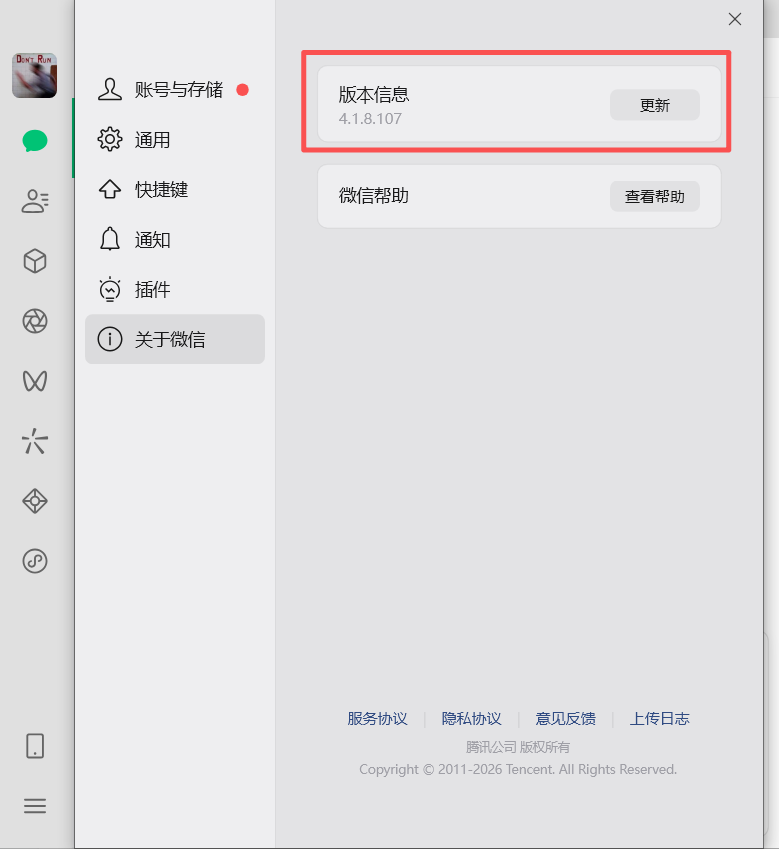
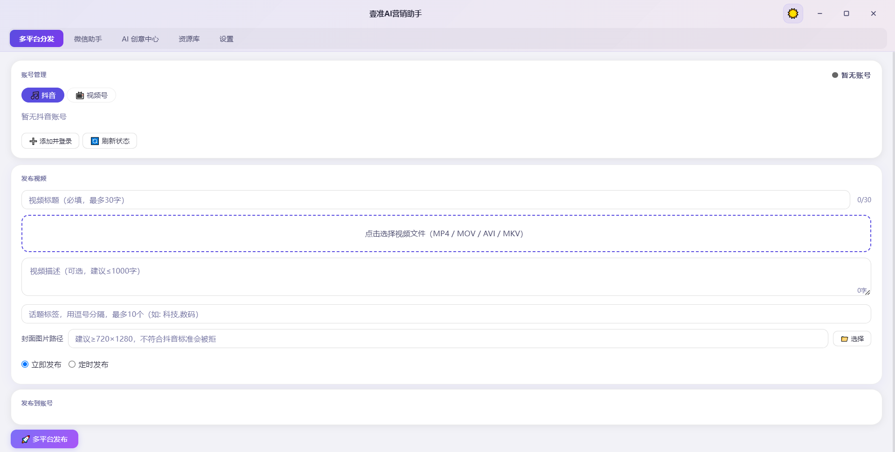
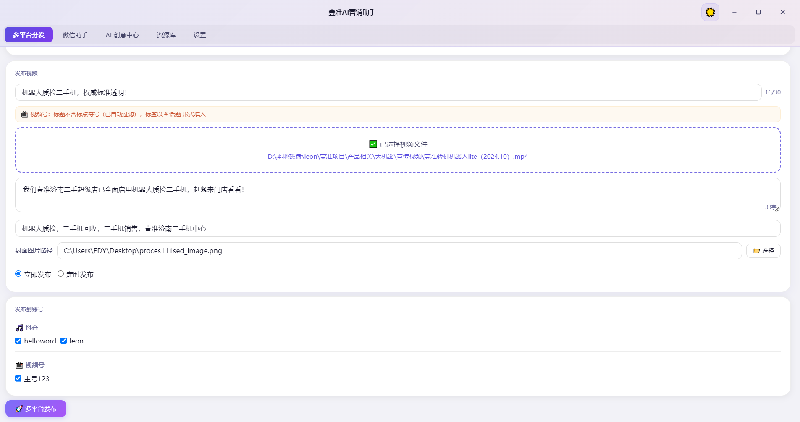
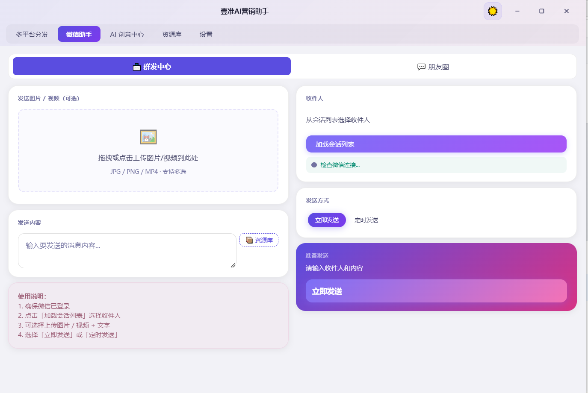
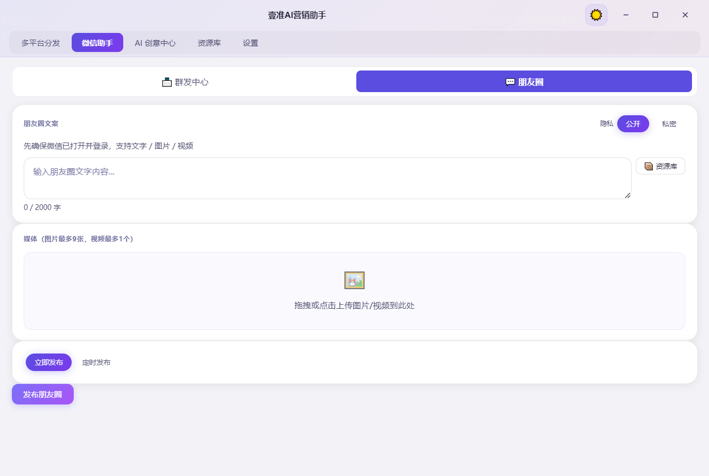
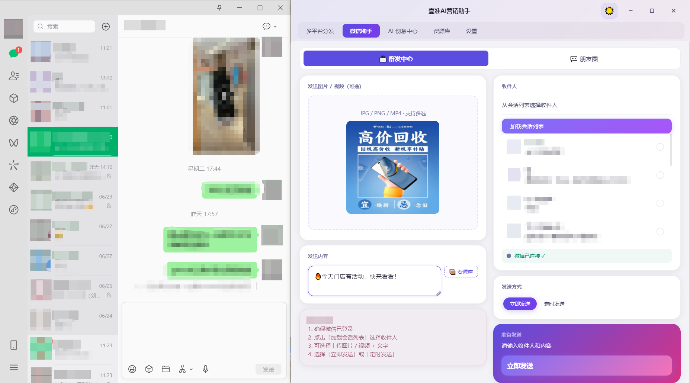
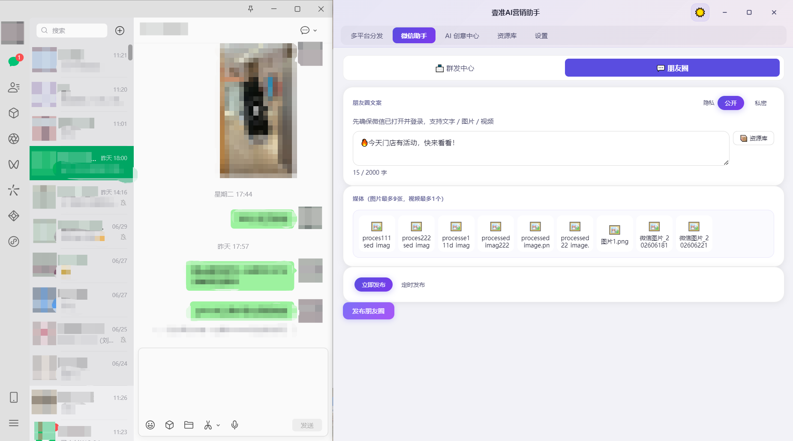
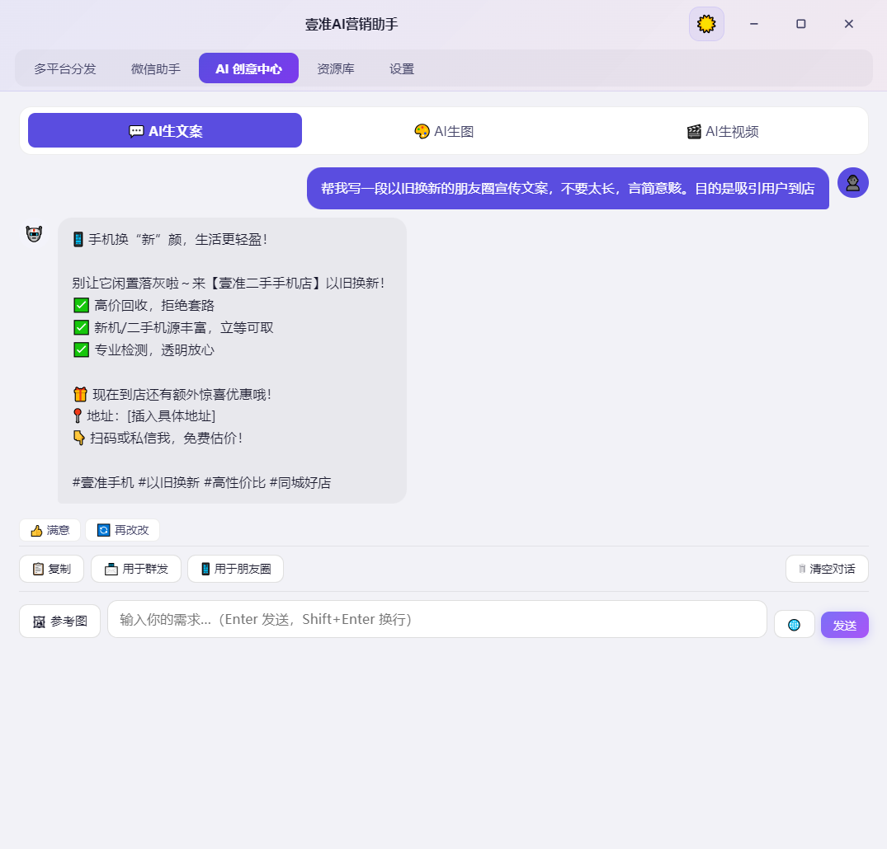
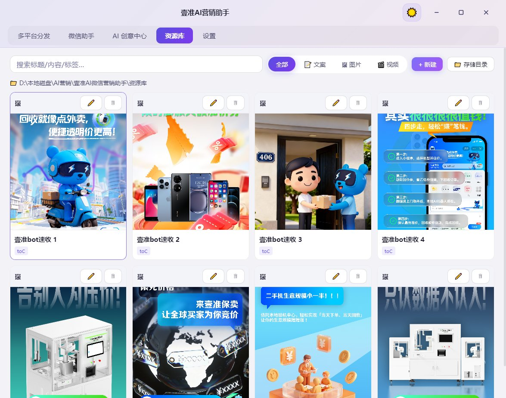
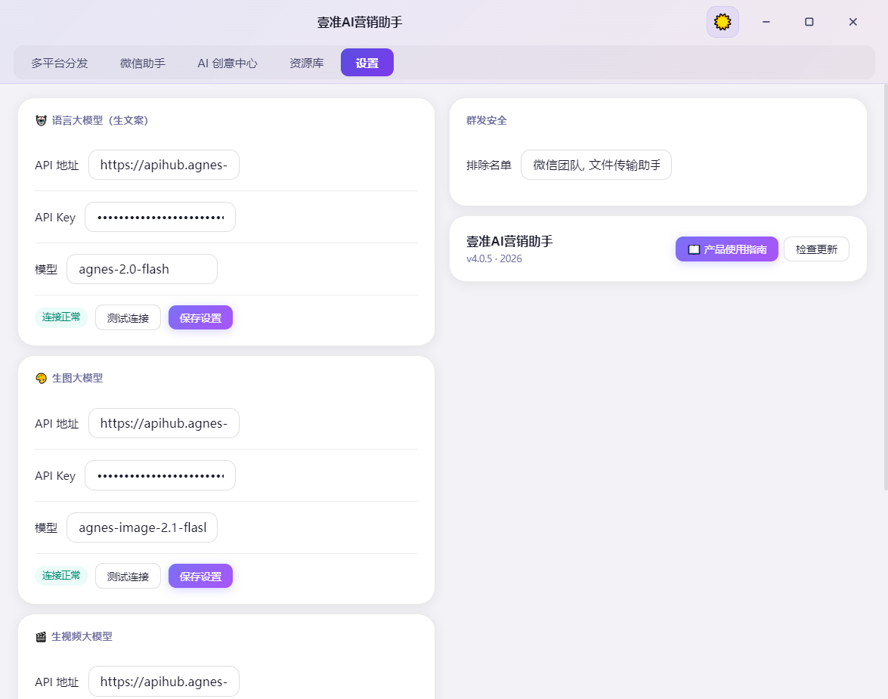

产品使用指南 · v4.0
一站式多平台营销工具：抖音 + 视频号分发、微信群发、朋友圈发布、AI 创意生成
下载安装包 → 双击安装 → 桌面快捷方式启动，三步完成。
下载安装包
从 GitHub Release 或联系官方人员获取安装文件
双击安装
一路点击「下一步」完成安装
启动应用
桌面快捷方式或开始菜单启动
安装包和更新包可能会被 360、腾讯管家、火绒 等杀毒软件误判为病毒或风险软件。请务必在安装前关闭所有杀毒软件，安装完成后再开启。
后续每次更新版本时，同样需要先关闭杀毒软件再运行安装包，否则可能导致应用无法正常启动或功能异常。
不同功能模块有不同依赖，提前准备好可以避免踩坑。
| 适用功能 | 微信助手（群发中心 / 朋友圈） |
|---|---|
| 要求 | 电脑上需安装并登录微信 PC 客户端（4.1.8 版本） |
| 说明 | 多平台分发（抖音 / 视频号）不需要微信客户端 |

| 适用功能 | 多平台分发（抖音 / 视频号） |
|---|---|
| 要求 | 电脑上需安装 Chrome 或 Microsoft Edge 浏览器 |
| 说明 | Windows 10/11 系统自带 Edge，无需额外安装 |
| 适用功能 | AI 创意中心（生文案 / 生图 / 生视频） |
|---|---|
| 需要准备 | 大模型的 API 地址、API Key、模型名称 |
| 说明 | 首次使用需在「设置」页填写，详见第 8 节 |
当前支持抖音、视频号两大平台。一个视频、一份文案，同时发布到多个账号。后续将根据用户需要，新增其他平台。
切换平台
顶部 Tab 选择「多平台分发」，点击「抖音」或「视频号」切换
添加并登录
点击「添加并登录」，输入账号名称 → 浏览器弹出扫码页 → 用手机扫码授权
刷新状态
点击「刷新状态」快速检查登录态，无需打开浏览器

填写发布信息：

勾选目标账号 → 点击「发布」
应用会自动打开浏览器，逐个发布到勾选的账号。底部日志区可查看实时进度。
顶部 Tab 选择「微信助手」，内部可切换「群发中心」和「朋友圈」两个板块。


操作流程：

操作流程：

三个子功能：「AI 生文案」「AI 生图」「AI 生视频」。对话式交互，输入需求即可生成。
AI 生文案
输入营销需求，自动生成推广文案、广告语、产品描述
AI 生图
文字描述 → 图片，支持多种尺寸比例，可选参考图
AI 生视频
文字描述 → 短视频，支持文本 / 图片驱动视频生成
💬 AI 生文案 使用技巧与场景
🎨 AI 生图 使用技巧与场景
🎬 AI 生视频（敬请期待）

统一管理文字、图片、视频素材。支持分类、搜索、一键填入群发和朋友圈。
素材管理
%APPDATA%\yizhun-wechat-bot-preview\resources在微信助手中的快捷使用

配置应用参数，包括大模型 API、发送间隔、更新检测等。
设置页有三个模型配置区域，分别对应不同 AI 功能：
| 配置项 | 用途 | 填什么 |
|---|---|---|
| 语言大模型 | AI 生文案、智能对话 | API 地址（OpenAI 兼容格式）+ API Key + 模型名称 |
| 生图模型 | AI 生图 | API 地址 + API Key + 模型名称 |
| 生视频模型 | AI 生视频 | API 地址 + API Key + 模型名称 |

API 地址根据模型类型不同而不同。同一种服务商，语言、生图、生视频的端点通常不共用。下表中的地址为完整调用地址（包含 path）。
💬 语言大模型（用于 AI 生文案 / 智能对话）
| 服务商 | 获取方式 | API 地址（完整调用地址） | 推荐模型名 |
|---|---|---|---|
| DeepSeek | platform.deepseek.com 注册，新用户赠送 500 万 tokens | https://api.deepseek.com/v1/chat/completions |
deepseek-v4-Pro / deepseek-v4-Flash |
| 通义千问 | dashscope.aliyun.com 注册，百万人以下免费 | https://dashscope.aliyuncs.com/compatible-mode/v1/chat/completions |
qwen-plus / qwen-turbo |
| 智谱 GLM | open.bigmodel.cn 注册，新用户赠送额度 | https://open.bigmodel.cn/api/paas/v4/chat/completions |
glm-4-plus / glm-4-air |
| OpenAI | platform.openai.com（付费） | https://api.openai.com/v1/chat/completions |
gpt-4o / gpt-4o-mini |
| Anthropic | console.anthropic.com（付费） | https://api.anthropic.com/v1/messages（非 OpenAI 格式） |
claude-3.5-sonnet |
🎨 生图大模型（用于 AI 生图）
| 服务商 | 获取方式 | API 地址（完整调用地址） | 推荐模型名 |
|---|---|---|---|
| Agnes AI | agnes.ai 注册获取 Key | https://apihub.agnes-ai.com/v1/images/generations |
agnes-image-2.1-flash |
| 通义万相 | dashscope.aliyun.com 注册，有免费额度 | https://dashscope.aliyuncs.com/api/v1/services/aigc/text2image/image-synthesis（非 OpenAI 格式） |
wanx2.1-image |
🎬 生视频大模型（用于 AI 生视频）
| 服务商 | 获取方式 | API 地址（完整调用地址） | 推荐模型名 |
|---|---|---|---|
| Agnes AI | agnes.ai 注册获取 Key | https://apihub.agnes-ai.com/v1/videos |
agnes-video-v2 |
| 即梦 | jimeng.jianying.com 注册，每日免费额度 | https://visual.volcengineapi.com/（火山引擎视觉服务，非 OpenAI 格式） |
jimeng-video |
| 可灵 | kling.kuaishou.com 注册（付费） | https://dashscope.aliyuncs.com/api/v1/services/aigc/video-generation/video-synthesis（非 OpenAI 格式） |
kling-video |
🌟 免费方案：Agnes AI（语言 + 生图 + 生视频 全免）
Agnes AI 是唯一一个同时支持语言大模型、生图、生视频，且提供 完全免费额度 的服务商。新用户注册即送免费额度，可覆盖日常使用需求。
注册地址：agnes.ai → 获取 API Key
语言模型：https://apihub.agnes-ai.com/v1/chat/completions（模型名 agnes-chat）
生图：https://apihub.agnes-ai.com/v1/images/generations（模型名 agnes-image-2.1-flash）
生视频：https://apihub.agnes-ai.com/v1/videos（模型名 agnes-video-v2）
sk- 开头的字符串。标注「非 OpenAI 格式」的模型（通义万相、即梦、可灵）需要应用本身支持对应原生接口，当前版本优先适配 OpenAI 兼容接口；如填写后无法使用，请切换到 Agnes AI 或语言大模型方案。
Q: 抖音发布时弹出验证码怎么办？
A: 这是抖音的安全验证，首次登录时偶尔出现。手动完成一次验证即可，后续发布不会再弹。如果频繁出现，建议在手机抖音 App 中完成一次完整登录后再试。
Q: 视频号显示「已登录」但实际发布时跳到扫码页？
A: Cookie 可能已过期或不完整。在账号管理中删除该账号，重新扫码登录一次即可。
Q: 刷新状态时原本删除的账号又出现了？
A: 旧版本的已知问题，v4.0 已修复。如果仍有残留，手动删除 %APPDATA%\yizhun-wechat-bot-preview\platform-cookies\shipinhao\ 目录下的 JSON 文件。
Q: AI 生成的内容没有反应？
A: 检查设置页的大模型配置是否正确（API 地址、Key、模型名）。确认 API Key 未过期且有足够余额。
Q: 群发发送失败？
A: 确认微信 PC 客户端已登录且未最小化到托盘。检查目标联系人是否在聊天列表中。尝试减少发送间隔时间。
Q: 视频号发布卡在上传页面不动？
A: 可能视频文件较大导致上传时间较长，耐心等待 1-2 分钟。超过 3 分钟仍未继续，请关闭弹出浏览器后重试。